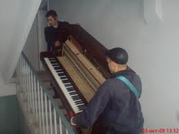
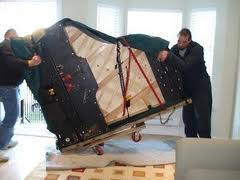

Перевозка пианино – вещь довольно занятная. Ведь перевезти пианино в Киеве на первый взгляд – задачка простая. Однако для того, чтобы инструмент остался целым и ни одна струна не лопнула, нужно подключать знатоков дела сего. Правильно! Нужно подключать грузчиков, ведь только бывалые люди смогут осуществить перевозку пианино, а того лучше перевозку рояля – легко и профессионально!

Среди всех видов грузоперевозок, перевозка фортепиано или пианино считается одной из сложных. Такой вид грузоперевозки чаще всего встречается во время квартирных переездов. Сложность состоит в том, что этот музыкальный инструмент только на первый взгляд кажется прочным и крепким. Однако у него внутри находится очень сложная и тонкая механика, при повреждении которой могут возникнуть очень серьезные проблемы.
Возникновение совсем маленькой трещинки на его корпусе, может непоправимо изменить звук инструмента, причем исправить это будет уже невозможно. Именно поэтому перевозка пианино в Киеве и в других городах должна осуществляется только профессионалами. Фортепьяно инструмент очень хрупкий, требующий к себе особого отношения, поэтому грузчики осуществляющие перевозку, должны относиться к этому процессу внимательно и аккуратно.
При осуществлении перевозки основной характеристикой является его высота. По этому параметру перевозка пианино киев, подразделяет этот инструмент на три вида. К первому относятся легкие пианино, их высота не превышает 120 сантиметров, а вес его обычно 150 килограммов. Такой вид пианино обычно устанавливают в квартиры, поэтому его перевозка по Киеву встречается чаще всего. Чем выше этаж, с которого или на который перевозят, тем труднее поставленная задача.
Вторым типом является инструмент имеющий высоту 130 - 150 сантиметров. Вес такого инструмента находится в диапазоне 200 - 400 килограмм. Этот инструмент считается более профессиональным, чем предыдущий и его звуковые характеристики гораздо лучше. Их могут использовать для выступлений в театрах и концертных залах. Перевозка такого инструмента дело очень ответственное, поэтому искать грузчиков нужно только в проверенных фирмах.
К третьему типу, относятся коллекционные старинные инструменты, их высота обычно превышает 150 сантиметров, а вес 400 килограммов. К этому инструменту нужно относиться особенно внимательно, потому что такое пианино является раритетом и предметом особой ценности. В большинстве случаев в эту категорию попадают немецкие пианино, созданные вручную. Чаще всего на таких инструментах играют профессиональные музыканты.
Нередко в нынешнее время можно встретить объявления об оказании всякого рода услуг на любой вкус, где перевозка пианино по Киеву и области уже давно воспринимается как отдельный пункт сервиса у многих поставщиков подобных услуг, а также выделяется в отдельные колонки во многих печатных изданиях рекламного характера. Это произошло не в один день, а также совершенно не случайно: как правило, для перевозки таких громоздких музыкальных инструментов, относиться к которым надо с особой осторожностью как снаружи, так и внутри, требует помимо крепких рук ещё и целого ряда специальных приспособлений, не говоря о транспорте, который способен доставить в пункт назначения этот ценный груз. Как видно, дело это действительно хлопотное, а, значит, далеко не каждой бригаде грузчиков по плечу.
Поэтому перевозка пианино – процесс непростой и требующий как усилий, так и умения. Перевозя пианино по Киеву, мы обеспечиваем Вас только профессиональными грузчиками. Грузчики не только спустят и поднимут инструмент достаточно надежно, но и обеспечат сохранность его в дороге.
И напоследок хочется пожелать Вам удачных переездов в новый и благополучный дом! И пусть перевозка пианино станет для вас мероприятием быстрым и без хлопот!
Обращайтесь к нам!
ДОМОВОЗ – переезд без проблем! |